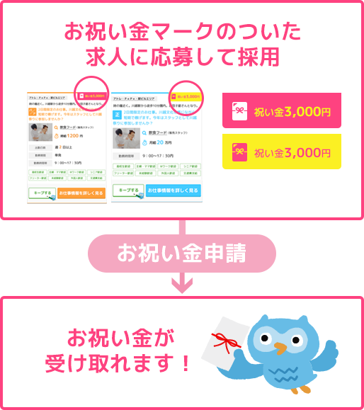
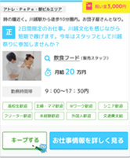

OBOお祝い金
川崎OBO内に記載されている
お祝い金マークのついた求人で
採用されるとお祝い金がもらえる
システムです。

OBOでは企業様やお店へお祝い金を
強制していない為、
お祝い金対象の
求人情報と
対象外の求人情報が
あります。その為、「お祝い金が絶対
もらえる求人サイト」に掲載できない
川越の求人情報が豊富に掲載されています。
-
黄色のお祝い金マーク
 求人募集企業 直接 お支払い！ 採用者様 求人募集企業が直接採用者へお支払いするお祝い金です。お支払い方法や金額については、 各求人情報詳細ページをご確認ください。
-
ピンクのお祝い金マーク
OBO運営事務局 お支払い！ 採用者様 OBO運営事務局が採用者様へお支払いするお祝い金です。お受け取り条件や方法は下記をご確認ください。
ピンクマークお祝い金簡単STEP
-
STEP01
川越OBO内お祝い金マークの
ついた求人に応募しよう！ ※当サイト以外からの応募の場合、お祝い金対象にはなりません。 -
STEP02
採用決定したら、働こう！
-
STEP03
お祝い金申請ができるようになる！ ※雇用形態により申請タイミングが異なります
※こちらはピンクのマークお祝い金となります。黄色マークのお祝い金は、各求人詳細に記載されている条件を満たすとお祝い金をもらうことができます。詳しくは各求人募集企業へお問合せください。
-
申請金が受け取れるか
チェック！
- 川越OBOより応募を行いましたか？
- お祝い金マークのついた求人に採用されましたか？
- お祝い金の受給条件を満たしていますか？
- 引き続き働く意思をもっていますか？
お祝い金を申請できます！
お祝い金
受け取りまでの流れ
- ピンクマーク お祝い金
-
OBO運営事務局
採用者様
当サイトのお祝い金は
楽天銀行提供サービス「メルマネ」を通じて進呈
させていただきます。
-
アルバイト・パートは初出勤後、社員
（正社員・派遣・契約）は入社日より30日後に
お祝い金申請フォームに従い 申請を行ってく
ださい。
※応募時に使用したメールアドレスを入力してください。 - 申請内容に基づきOBO事務局より勤務先へ
「出勤状況」の確認を行います。
（申請後30日以内） - 勤務先が採用確定した日の
翌月20日に
楽天銀行の「かんたん振り込み（メルマネ）
」から、「川越OBOからのお知らせ」という
件名のメールが届きます。
※楽天銀行からのメールが届いた日から45日以内に
手続きを完了しないと、採用お祝い金がもらえる
権利がなくなりますのでご注意ください。 - 受け取り手続きを完了すると、数日で
お祝い金が振り込まれます。
- 黄色マーク お祝い金
-
求人募集企業
採用者様
各企業により、支払方法・条件が異なります。
求人詳細や面接時にしっかりとご確認ください。
必ずご確認ください。
下記に該当する場合、お祝い金をお渡しできません。- 採用後、実際に勤務をしていない場合
- 応募時に当サイト応募フォームをご利用いただいていない場合
- 当サイト応募以前に他の求人媒体（アルバイト情報サイト、フリーペーパー、企業ホームページ、張り紙等）から、同じ求人案件にに応募した場合
- 応募した求人先に出勤状況の確認ができない場合
- 採用後に当サイトより応募した場合
- 継続的に働く意思がないと判断された場合
- 勤務開始後「私的理由での急な退社」や「企業・店舗へ損害を与えた」などの報告を頂いた場合
- その他、OBO運営事務局が不適切と判断した場合
- お客様にご自身名義の口座が用意できない場合
- ご入力内容に嘘、偽りが発覚した場合
本当に大切なことは
「働く場所を見つけること」
お祝い金マークの求人チェックと共に、
マークのない川越OBO求人も要チェック！